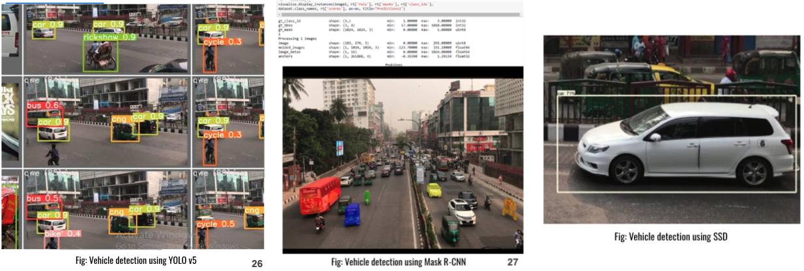

The Future of Traffic Monitoring: An Overview
In today’s rapidly urbanizing world, the exponential growth in the number of vehicles on the road has brought about severe challenges in traffic management, particularly in developing countries like Bangladesh. The roads of Bangladesh present a unique and complex scenario where a diverse range of vehicles, each with different speed capabilities, share the same congested pathways. From high-speed buses and cars to slower-moving rickshaws, CNGs (compressed natural gas vehicles), and the locally prevalent Legunas, the traffic mix is as varied as it is challenging to manage.
This blend of vehicle types, moving at varying speeds, creates a chaotic environment prone to frequent traffic jams and a high risk of accidents. The narrow roads, combined with the unpredictable flow of traffic, exacerbate these issues, making traditional traffic management systems inadequate. Accidents are not just a daily occurrence; they are often life-threatening, affecting pedestrians and drivers alike. The lack of synchronization in vehicle speeds often leads to rear-end collisions, side-swiping incidents, and hazardous situations, particularly during rush hours. The existing traffic control measures struggle to keep up with this dynamic and unregulated flow, resulting in inefficiencies that impact not only safety but also the economic vitality of urban areas.
These pressing challenges demand innovative solutions that can efficiently monitor, manage, and control traffic flows in real-time. Video-based vehicle detection and tracking systems, leveraging advanced deep learning and image processing technologies, offer a promising solution. These systems are designed to adapt to the specific traffic conditions of regions like Bangladesh, where detecting and tracking a wide variety of vehicle types is crucial for maintaining order on the roads. By accurately identifying different vehicles and monitoring their movements, these systems can significantly reduce accidents, alleviate congestion, and enhance overall road safety.
This Research delves into the advancements in these cutting-edge technologies, illustrating how they are being applied to transform traffic management in Bangladesh. It will detail the processes involved in detecting and tracking vehicles, the unique challenges presented by the local traffic environment, and the ways in which these technologies are optimizing traffic flow, reducing accidents, and ultimately saving lives.

Image Processing and Object Detection: Building the Foundation
The foundation of any effective vehicle detection system lies in the robust and sophisticated process of image processing. This crucial step transforms raw video footage into a format that can be analyzed by advanced algorithms, making it possible to extract meaningful information from each frame. Image processing involves a series of techniques designed to enhance and manipulate images to isolate and identify objects of interest—vehicles, in this context—from the surrounding background.
One of the primary techniques employed in image processing is edge detection. Edge detection algorithms are designed to identify the boundaries of objects within an image. By detecting the sharp changes in brightness or color at the edges of objects, these algorithms can delineate the shapes of vehicles from the background, effectively segmenting them from other elements within the frame. This is particularly useful in scenarios where vehicles may blend into the background due to similar colors or textures. Another critical technique is thresholding, which involves converting a grayscale image into a binary image—where each pixel is either black or white. This simplification allows the system to focus on the most relevant parts of the image. By applying a threshold, the system can differentiate between the vehicle and the background based on pixel intensity, making it easier to isolate the vehicle for further analysis. Segmentation is another vital process in image processing, where an image is divided into multiple segments to simplify the representation of the image and make it more meaningful for analysis. Segmentation helps in identifying the different parts of the vehicle and the background separately, which is essential for accurate object detection. Once these preprocessing steps have been completed, the process of object detection begins. Object detection is the task of identifying and locating objects—vehicles, in this case—within each frame of the video. This is achieved by applying deep learning models that are trained to recognize various vehicle types. These models output bounding boxes around the detected vehicles, indicating their location within the frame.
Once these preprocessing steps have been completed, the process of object detection begins. Object detection is the task of identifying and locating objects—vehicles, in this case—within each frame of the video. This is achieved by applying deep learning models that are trained to recognize various vehicle types. These models output bounding boxes around the detected vehicles, indicating their location within the frame.Object detection involves identifying and locating vehicles within video frames using bounding boxes. Deep learning models, such as YOLO (You Only Look Once), Mask R-CNN, and SSD (Single Shot Detection), have become the leading technologies in this field. YOLO, in particular, is known for its real-time detection capabilities, making it ideal for applications in traffic monitoring. Mask R-CNN and SSD, while offering different trade-offs in speed and accuracy, provide robust alternatives for vehicle detection in complex environments.
Deep Learning in Vehicle Detection: Harnessing Advanced AI Models
The advent of deep learning has revolutionized the field of vehicle detection, bringing about transformative changes that enable systems to process and analyze vast amounts of video data with unparalleled accuracy and speed. Among the various models developed, YOLO v5 (You Only Look Once version 5) emerges as a particularly powerful and versatile tool. This model is meticulously designed to handle high-resolution images, ensuring that even the most minute details are captured and analyzed in real-time. This capability is crucial for effective traffic monitoring and management, where timely and accurate detection of vehicles can make a significant difference. The architecture of YOLO v5 is a testament to the advancements in deep learning. It is optimized for speed and accuracy, allowing it to scan and process video frames at an astonishing rate. This rapid processing enables the model to identify and classify vehicles in real-time, even under challenging conditions. Whether it's poor lighting, heavy rain, or dense traffic, YOLO v5 maintains its accuracy, ensuring that no vehicle goes undetected. This resilience makes it an ideal solution for real-world applications, where environmental conditions can be highly unpredictable. However, what truly sets our system apart is its ability to go beyond the traditional scope of vehicle detection. While most systems are primarily focused on identifying common vehicles such as buses, cars, and motorcycles, our system is uniquely tailored to recognize a wider range of vehicles that are specific to our region. This includes rickshaws, CNG (compressed natural gas vehicles), and Leguna, a type of small truck widely used for local transport. These vehicles, though less common in other parts of the world, are integral to the transportation ecosystem in our area. Their inclusion in the detection system ensures a more comprehensive and relevant approach to traffic management.
By integrating these locally significant vehicle categories into the detection framework, our system provides a more holistic solution that directly addresses the complexities of our roads. The ability to accurately detect and track these vehicles not only improves the overall effectiveness of traffic management but also enhances safety by reducing the likelihood of accidents involving these often-overlooked modes of transport. Furthermore, this localized approach to vehicle detection is crucial for developing traffic solutions that are both effective and contextually appropriate, ensuring that the unique needs of our roadways are met. The optimization of YOLO v5 for this purpose is demonstrated through extensive training, where the model is exposed to a diverse dataset that includes images of both common and region-specific vehicles.
The results of this training process, as shown in the performance graphs ,highlight the model's ability to adapt and excel in identifying a wide range of vehicles. This adaptability is a key factor in the system's success, making it a powerful tool for modern traffic management in our specific context.
Detecting Local Vehicles: Tailoring the Dataset for Our Roads
The process of creating this dataset was both exhaustive and precise. We began by identifying key locations across various regions in Bangladesh where traffic patterns and vehicle types vary significantly. These locations included bustling urban centers, quiet residential streets, busy highways, and rural roads, each offering a unique traffic mix. To ensure comprehensive coverage, we recorded video footage from multiple vantage points, employing a variety of camera angles and heights. This approach allowed us to capture vehicles from different perspectives, including frontal, rear, side, and aerial views. The use of both stationary and mobile cameras ensured that the dataset included footage of vehicles in motion, as well as those at rest, providing a complete picture of the dynamic road environment. Recording was conducted over several weeks to capture a wide range of conditions, including different times of day and varying weather conditions such as bright sunlight, overcast skies, rain, and fog. This diversity in conditions was critical, as it allowed us to build a dataset that reflects the real-world challenges faced by our detection system, such as changes in lighting, visibility, and vehicle behavior under different weather scenarios.
Once the video footage was collected, the process of converting these raw videos into usable data began. Thousands of images were extracted from the videos, each representing a frame where vehicles were clearly visible. These images were then meticulously annotated by a team of experts. The annotation process involved drawing bounding boxes around each vehicle and labeling them according to their type—whether it was a car, truck, rickshaw, CNG, Leguna, or another vehicle type. This step was crucial, as accurate labeling directly impacts the performance of the detection models. Special attention was given to the region-specific vehicles, ensuring that their unique features were clearly marked and distinguishable from other vehicle types. The resulting custom dataset is a treasure trove of information, encompassing a vast array of vehicle types, angles, and conditions. It includes not only the common vehicles like cars, buses, and motorcycles but also those that are less frequently seen in standard datasets but are prevalent in our local context. The inclusion of these region-specific vehicles makes our dataset invaluable, providing the foundation for training our deep learning models to recognize and accurately detect these vehicles with a high degree of precision. Moreover, the dataset's comprehensive nature ensures that our system is not only capable of detecting these vehicles in optimal conditions but is also robust enough to handle the challenges posed by varying lighting and weather conditions. This level of detail and customization ensures that our vehicle detection system is well-suited to the specific needs of our traffic environment, making it a powerful tool for managing and improving traffic flow in our region.

Tracking Vehicles: Maintaining Continuity in Motion
Vehicle tracking is an inherently complex and sophisticated process that extends far beyond the initial task of simple detection. While detection allows the system to identify vehicles within individual frames of a video feed, tracking involves following these vehicles as they move across multiple frames over time. This continuity is essential for maintaining the identity and trajectory of each vehicle, ensuring that the system can accurately monitor and analyze traffic patterns, predict vehicle movements, and provide actionable data for traffic management. The complexity of vehicle tracking lies in the dynamic nature of real-world traffic environments. Vehicles rarely move in predictable, straight lines; instead, they change lanes, stop and start, and interact with other vehicles in ways that can make tracking their movements challenging. Moreover, factors such as occlusions—where one vehicle temporarily obscures another—overlapping objects, and varying speeds further complicate the process. To address these challenges, advanced tracking algorithms like DeepSORT and GOTURN been developed, each bringing unique strengths to the task of vehicle tracking.
DeepSORT (Simple Online and Realtime Tracking with a Deep Association Metric) is a state-of-the-art algorithm that combines object detection with sophisticated motion prediction techniques. At its core, DeepSORT uses the detections generated by models like YOLO to identify vehicles in each frame. It then employs a series of filters and feature extraction methods to maintain the identity of each vehicle as it moves through the video sequence. One of the key components of DeepSORT is the Kalman filter, a mathematical algorithm that estimates the state of a moving object by predicting its future position based on past data. The Kalman filter continuously updates these predictions as new data comes in, allowing the system to track the vehicle's position even in the presence of noise or uncertain measurements. In addition to motion prediction, DeepSORT uses deep feature extraction to distinguish between different vehicles. By analyzing the visual appearance of each vehicle—such as color, shape, and texture—the system can more accurately associate detections across frames, even when vehicles overlap or are partially occluded. This combination of motion and appearance data makes DeepSORT particularly effective in complex, crowded environments, where multiple vehicles are moving in close proximity. DeepSORT’s ability to track multiple vehicles simultaneously is one of its standout features. Whether in a busy intersection or on a crowded highway, the algorithm can manage the tracking of dozens of vehicles at once, maintaining high accuracy even as vehicles change lanes, accelerate, or decelerate. This capability is critical for real-time traffic management systems, where understanding the flow of multiple vehicles is essential for tasks such as congestion monitoring, accident detection, and traffic light control.
On the other hand, GOTURN (Generic Object Tracking Using Regression Networks) is a high-speed, single-object tracking algorithm that excels in scenarios where maintaining high frame rates is crucial. Unlike DeepSORT, which is designed to track multiple objects, GOTURN focuses on the precise and rapid tracking of a single vehicle. It is particularly well-suited for applications where the speed of tracking is paramount, such as in high-speed pursuits or when tracking a specific vehicle of interest in a surveillance scenario. OTURN operates using a regression-based approach, where it directly predicts the location of the tracked vehicle in each new frame based on its appearance in the previous frame. This method allows GOTURN to bypass some of the more computationally intensive processes used by other trackers, resulting in significantly faster tracking speeds. However, this speed comes with a trade-off: GOTURN does not perform as well in environments with multiple similar objects or when the tracked object undergoes significant changes in appearance. Despite these limitations, GOTURN’s efficiency and speed make it a valuable tool in scenarios where real-time performance is critical and the focus is on a single target.
Estimating Speed and Counting Vehicles: Practical Application
Speed estimation is a critical component of traffic management, particularly in areas where speed regulation is essential for safety. Using the YOLO v5 model, vehicle speed is estimated by analyzing the distance a vehicle travels within a frame and converting this pixel data into real-world measurements. This process is crucial for enforcing speed limits and identifying speeding vehicles. Additionally, vehicle counting is another significant application, where the system not only detects and tracks vehicles but also counts them as they pass through different lanes. This data is invaluable for traffic analysis, helping authorities understand traffic patterns and make informed decisions about road usage and improvements.

Estimating Speed and Counting Vehicles: Practical Application
The evaluation of vehicle detection and tracking systems is a critical step in determining their effectiveness and suitability for real-world applications. This evaluation is carried out through the use of various performance metrics, each offering valuable insights into the strengths and weaknesses of different models. Key metrics include Precision, Recall, and mean Average Precision (mAP), which together paint a comprehensive picture of a model's accuracy, reliability, and overall performance.
Key Performance Metrics:
Precision: Precision measures the accuracy of the positive predictions made by a detection model. It is defined as the ratio of true positive detections to the total number of positive detections (both true positives and false positives). High precision indicates that the model is effective in minimizing false positives, ensuring that the vehicles it detects are indeed vehicles and not background objects or noise. In traffic management, high precision is crucial for avoiding unnecessary alarms or incorrect vehicle identifications.
Recall: Recall, on the other hand, assesses the model's ability to detect all relevant vehicles in a given dataset. It is the ratio of true positive detections to the total number of actual vehicles present in the dataset (true positives and false negatives). High recall means that the model successfully detects most, if not all, of the vehicles, ensuring that no vehicle goes undetected. This metric is especially important in applications where missing a vehicle could lead to significant traffic management issues, such as accident detection or congestion monitoring.
Mean Average Precision (mAP): mAP combines both precision and recall to provide a single metric that reflects the model's overall performance. It is calculated as the average of precision values at different recall levels, providing a balanced measure of both false positives and false negatives. mAP is often considered the gold standard in object detection evaluation, as it encapsulates the trade-offs between precision and recall.
Model Comparisons and Findings:
YOLO v5: YOLO v5 emerged as the most robust model in terms of both speed and accuracy. Its architecture allows for rapid processing of high-resolution video frames, making it ideal for real-time traffic monitoring. YOLO v5's ability to balance speed with high detection accuracy, especially in recognizing a wide variety of vehicles, including locally specific ones like rickshaws and CNGs, makes it particularly suited for our context. The model’s versatility in handling diverse traffic scenarios—ranging from dense urban environments to more sparse rural roads—demonstrates its effectiveness in real-world applications.
Mask R-CNN: Mask R-CNN excels in scenarios requiring detailed object segmentation. It not only detects vehicles but also segments them at the pixel level, providing a more precise boundary around each vehicle. However, this precision comes at the cost of speed. Mask R-CNN is slower than YOLO v5, making it less ideal for real-time applications. It is more suitable for post-processing tasks or applications where accuracy in segmentation is more critical than speed.
SSD (Single Shot Detection): SSD offers a good balance between speed and accuracy. It is designed to detect multiple objects in a single pass through the image, making it faster than Mask R-CNN but generally less accurate in segmentation than YOLO v5. SSD is particularly effective at detecting smaller vehicles and objects, which can be a significant advantage in environments with diverse vehicle sizes and types. However, its precision and recall metrics may not be as high as those of YOLO v5 in more complex detection scenarios.
Challenges and Trade-Offs:
Speed vs. Accuracy: There is often a trade-off between speed and accuracy in vehicle detection models. While YOLO v5 offers an excellent balance, Mask R-CNN’s higher precision comes at the cost of reduced speed, and SSD’s efficiency may slightly compromise accuracy.
Resource Requirements: Different models also have varying demands in terms of computational resources. YOLO v5, for example, is relatively resource-efficient given its performance, whereas Mask R-CNN may require more powerful hardware to run effectively, especially in real-time scenarios.
Adaptability to Local Context: The ability of a model to adapt to the local traffic environment is crucial. YOLO v5’s strong performance in detecting region-specific vehicles like rickshaws and CNGs demonstrates its adaptability, which is essential for effective traffic management in our context.
Handling Occlusions and Overlapping Objects: Models like DeepSORT, which are used in conjunction with detection algorithms, face challenges in maintaining vehicle identity in the presence of occlusions or overlapping objects. While these models are effective, they require fine-tuning to handle such scenarios accurately.
Real-World Applications and Future Directions: From Research to Reality
The integration of video-based vehicle detection and tracking systems into urban infrastructure marks a significant leap forward in the quest for smarter, safer cities. These advanced systems are already making a tangible impact in densely populated urban centers, where the complexity of traffic management demands innovative solutions. In cities like Dhaka, where traffic congestion and road safety are persistent challenges, these systems have been deployed to monitor and regulate traffic with unprecedented precision.
In practice, these systems are revolutionizing how traffic is managed. By continuously analyzing video feeds from strategically placed cameras across the city, the systems can monitor the flow of vehicles in real-time, providing a detailed and dynamic picture of traffic conditions. This real-time monitoring allows for immediate adjustments to be made in traffic control measures, such as the timing of traffic lights, to alleviate congestion and improve the overall flow of vehicles. Additionally, these systems play a critical role in enforcing limits. By accurately detecting and tracking vehicles, they can identify speed violations and automatically issue penalties, thus enhancing road safety and encouraging responsible driving behavior.
Beyond their current applications, the future potential of these systems is even more promising. As the technology continues to evolve, there is a strong focus on improving detection accuracy under challenging conditions, such as adverse weather. Rain, fog, and poor lighting can significantly hinder the performance of vehicle detection systems, but ongoing research aims to enhance their robustness, ensuring reliable operation regardless of environmental conditions. This would make the systems more versatile and effective across a wider range of scenarios.
Another exciting development lies in the integration of these detection systems with AI-driven traffic lights. By connecting real-time traffic data with intelligent traffic signals, cities can achieve a new level of traffic management efficiency. AI-driven traffic lights could dynamically adjust their timing based on the actual flow of traffic, reducing unnecessary stops and starts, minimizing fuel consumption, and cutting down on commute times. This level of integration represents a shift toward fully responsive and adaptive traffic systems that can manage traffic proactively rather than reactively.
Moreover, the expansion of these systems into the realm of autonomous vehicles is a natural progression. As autonomous vehicles more prevalent, the need for reliable, real-time data on traffic conditions will become even more critical. Video-based detection and tracking systems can provide the data backbone that autonomous vehicles require to navigate safely and efficiently. By feeding real-time traffic information into autonomous driving systems, these vehicles can make informed decisions on route planning, speed, and maneuvering, further enhancing the safety and efficiency of our roads.


Conclusion: The Future of Traffic Management with AI
The landscape of traffic management is undergoing a profound transformation, driven by the remarkable advancements in video-based vehicle detection and tracking technologies. These innovations are rapidly becoming essential tools in our efforts to create safer roads, reduce traffic congestion, and optimize the efficiency of transportation networks.
As these systems continue to evolve, their impact on urban mobility will be increasingly significant. By providing real-time insights and intelligent traffic control solutions, they are set to revolutionize how we navigate and manage our cities.
This documentary has delved into the forefront of these technological advancements, showcasing how deep learning and image processing are not just improving current traffic management systems but are also laying the foundation for the smart cities of the future. These cities will be characterized by seamless traffic flows, enhanced safety measures, and more sustainable urban environments, all made possible by the ongoing evolution of these cutting-edge technologies.
References
The YOLO v5 model was used extensively in our research, demonstrating superior performance in detecting a variety of vehicle types, including local vehicles such as rickshaws and CNGs. [7] J. Redmon, S. Divvala, R. Girshick, and A. Farhadi, “You only look once: Unified, real-time object detection,” in Proceedings of the IEEE Conference on Computer Vision and Pattern Recognition, pp. 779–788, 2016.
Mask R-CNN proved effective in scenarios requiring detailed object segmentation, particularly in identifying smaller or partially occluded vehicles. [11] K. He, G. Gkioxari, P. Dollár, and R. Girshick, “Mask R-CNN,” in Proceedings of the IEEE International Conference on Computer Vision, pp. 2961–2969, 2017.
DeepSORT was used for tracking vehicles across frames, efficiently handling challenges such as occlusions and overlapping objects. [13] Dang, Tuan Linh, Gia Tuyen Nguyen, and Thang Cao. “Object tracking using improved deep SORT YOLOv3 architecture.” ICIC Express Letters 14, no. 10 (2020): 961-969.
Adverse weather conditions pose significant challenges to vehicle detection systems, requiring robust models capable of maintaining accuracy in poor visibility. [6] R. A. Hadi, G. Sulong, and L. E. George, “Vehicle detection and tracking techniques: a concise review,” arXiv preprint arXiv:1410.5894, 2014.
A custom dataset was created to include vehicles unique to our region, such as Leguna and CNGs, ensuring accurate detection in local traffic environments. [:contentReference[oaicite:0]{index=0}
SSD was utilized for its balance between speed and detection accuracy, particularly in detecting smaller vehicles. [12] W. Liu, D. Anguelov, D. Erhan, C. Szegedy, S. Reed, C.-Y. Fu, and A. C. Berg, “SSD: Single shot multibox detector,” in European conference on computer vision, pp. 21–37, Springer, 2016.
Improvements in YOLOv5 have led to better detection of small objects, critical for identifying smaller vehicles in dense urban traffic. [9] W. Zhan, C. Sun, M. Wang, J. She, Y. Zhang, Z. Zhang, and Y. Sun, “An improved YOLOv5 real-time detection method for small objects captured by UAV,” Soft Computing, pp. 1–13, 2021.